Apa tema peta dan apa arti simbolnya?
Pertemuan 4 · Daring · 100 menit
Komponen dan kelengkapan peta
Pahami fungsi setiap komponen, lalu lihat bagaimana susunan dan hierarki visual menentukan kejelasan peta.
1. Kegiatan hari ini
- Perkenalan dan absensi0–20 menit
- Kilas balik minggu 1–3 dan alur semester20–30 menit
- Mengenali seluruh komponen peta30–35 menit
- Simbol titik, garis, dan area pada peta RBI35–55 menit
- Komponen peta dan contoh penggunaannya55–70 menit
- Membandingkan peta umum dan peta tematik70–85 menit
- Contoh tambahan dan tanya jawab85–95 menit
- Ringkasan dan pengantar minggu depan95–100 menit
Perkenalan pengajar
- Nama
- Ni Putu Praja Chintya
- Panggilan
- Praja
- Kampus
- Pusan National University · S3
- Penelitian
- Data multisumber untuk pemantauan terumbu karang
Setelah pertemuan ini, mahasiswa dapat mengenali jenis peta, membaca simbol, dan menjelaskan fungsi komponen peta.
2. Kilas balik minggu 1–3
Minggu 1 · Apa itu peta?
- Peta menyajikan informasi tentang permukaan bumi dalam bentuk yang diperkecil.
- Objek dan informasi diwakili oleh simbol.
- Informasi dipilih sesuai tujuan dan skala peta.
Minggu 2 · Jenis peta berdasarkan isinya
PETA
Peta umum
Menampilkan berbagai unsur geografis.
Contoh: peta topografi / RBIPeta tematik
Menonjolkan tema tertentu.
Contoh: peta kepadatan pendudukA. Peta umum: peta RBI Yogyakarta
- RBI adalah singkatan dari Rupabumi Indonesia.
- Pada satu peta, kita dapat melihat jalan, sungai, permukiman, dan lokasi fasilitas.
- Peta topografi juga menggambarkan bentuk permukaan bumi, misalnya melalui garis kontur.

Titik · Sumber BIG
Garis · Sumber BIG
Area · Sumber BIG
Area · Sumber BIG
Peta RBI merupakan peta dasar resmi Indonesia. Informasi lokasi pada peta dasar dapat digunakan sebagai acuan untuk menambahkan tema lain. Sumber: BIG.
B. Peta tematik: kepadatan penduduk
- Tema utamanya adalah penduduk, bukan semua unsur geografis.
- Warna wilayah membantu membandingkan nilai pada legenda.
- Peta bagian atas menunjukkan jumlah penduduk; bagian bawah menunjukkan kepadatan.

Sumber: U.S. Census Bureau, Population Size and Density, 1 Juli 2006.
Contoh satu lembar peta topografi yang utuh
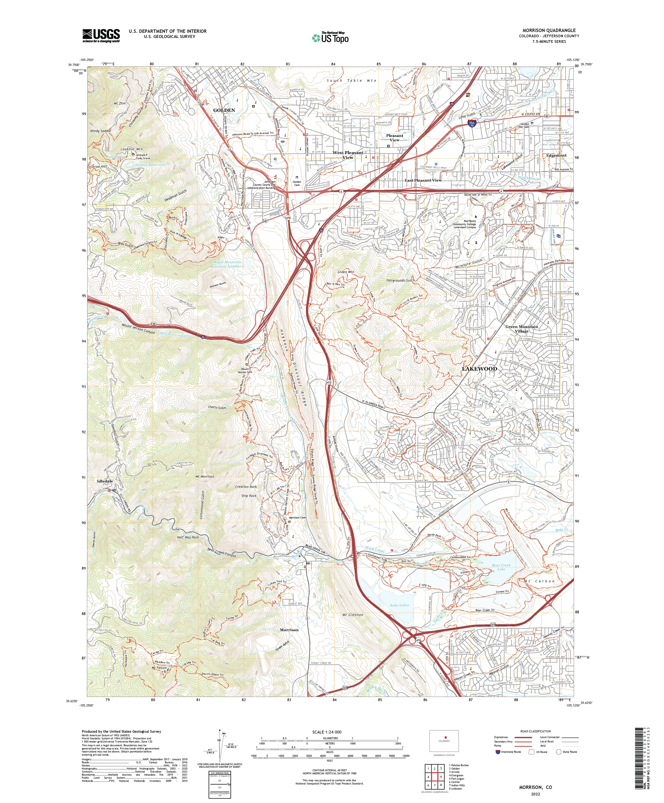
Sumber: U.S. Geological Survey, 2022 US Topo of the Morrison, Colorado Quadrangle · Public domain.
- Garis kontur menunjukkan bentuk permukaan bumi.
- Jalan, perairan, bangunan, batas, dan nama tempat tampil bersama sebagai informasi umum.
- Informasi di tepi bawah membantu pembaca menilai skala, sumber, sistem koordinat, serta waktu pembuatan peta.
Bandingkan: peta RBI membantu mengenali berbagai objek di Indonesia. Lembar USGS menunjukkan bagaimana peta topografi yang utuh menyusun muka peta dan informasi tepinya. Peta kepadatan penduduk menonjolkan satu tema.
Dasar pengelompokan lainnya
| Dasar pembagian | Yang dibandingkan | Contoh |
|---|---|---|
| Isi | Berbagai unsur atau satu tema | Peta umum dan peta tematik |
| Skala | Tingkat rincian dan cakupan wilayah | 1 : 25.000 lebih besar skalanya daripada 1 : 250.000 |
| Penyajian | Simbol atau rekaman foto/citra sebagai tampilan utama | Peta garis dan peta foto/citra |
Satu peta dapat masuk beberapa kelompok sekaligus. Misalnya, peta RBI dapat disebut peta umum berdasarkan isinya dan peta garis berdasarkan penyajiannya. Peta garis tetap dapat memuat simbol titik dan area.
Contoh lain: peta dunia dan citra cahaya malam
Peta umum dengan cakupan dunia

Sumber: Physical World Map, CIA World Factbook, via Wikimedia Commons.
Peta ini memperlihatkan daratan, lautan, dan nama tempat. Cakupannya luas sehingga jalan lokal dan bangunan tidak terlihat.
Penyajian dari citra satelit

Sumber: NASA SVS, Earth at Night 2012.
Citra cahaya malam memperlihatkan cahaya yang direkam sensor. Ini contoh penyajian berbasis citra, bukan foto udara biasa dan bukan pengukuran langsung kepadatan penduduk.
Minggu 2 · Pekerjaan kartografi
- Menentukan tujuan dan pembaca peta
- Memilih dan menyiapkan data
- Menyusun simbol, tulisan, dan tata letak
- Menerbitkan peta
- Memperbarui informasi
Minggu 3 · Peta sebagai media komunikasi
Pembuat peta→Peta→Pembaca
- Siapa pembacanya?
- Apa informasi yang ingin disampaikan?
- Untuk apa peta digunakan?
Hari ini kita memeriksa apakah simbol dan keterangan peta membantu pembaca memahami informasi tersebut.
3. Posisi materi hari ini
- Minggu 1–3: konsep, klasifikasi, dan komunikasi peta.
- Minggu 4 · Hari ini: komponen dan kelengkapan peta.
- Minggu 5–7: proyeksi, pembacaan peta topografi, skala, dan generalisasi.
- Minggu 8: UTS.
- Minggu 9–12: relief, tampilan 3D, variabel tampak, simbol, serta pemetaan kualitatif dan kuantitatif.
- Minggu 13–15: toponimi, tata letak, dan evaluasi peta.
- Minggu 16: UAS.
Minggu 4–10 bersama Praja dilaksanakan secara daring.
3.1 Mengenali komponen pada peta utuh
Peta berikut menunjukkan bagaimana komponen disusun menjadi satu kesatuan. Muka peta menjadi pusat perhatian; komponen lain membantu pembaca memahami dan menggunakan informasinya.
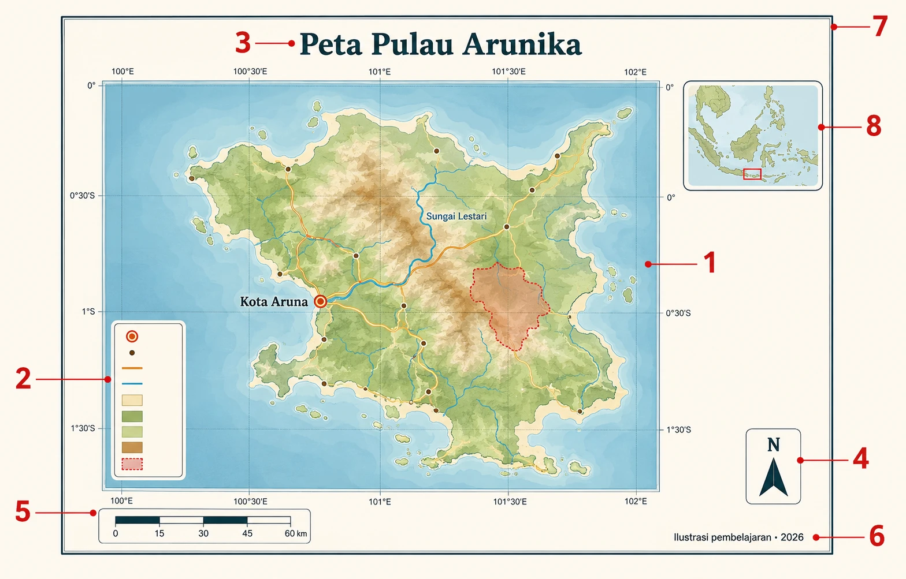
Sumber: Ilustrasi pembelajaran yang dibuat khusus untuk materi ini. Pulau Arunika bukan lokasi nyata; isi gambar bukan data pengamatan.
- 1Muka peta
Menampilkan lokasi, objek, dan hubungan keruangannya.
- 2Legenda
Menjelaskan arti tanda, warna, garis, dan bidang.
- 3Judul
Menjawab apa, di mana, dan bila perlu kapan.
- 4Orientasi
Membantu pembaca memahami arah.
- 5Skala
Menghubungkan jarak pada peta dengan jarak di lapangan.
- 6Sumber dan waktu
Menjelaskan asal, waktu, dan batas penggunaan informasi.
- 7Bingkai
Menyatukan susunan dan membatasi bidang penyajian.
- 8Peta lokasi
Menunjukkan posisi wilayah utama dalam cakupan yang lebih luas.
Lihat contoh komponen peta dari OpenALG
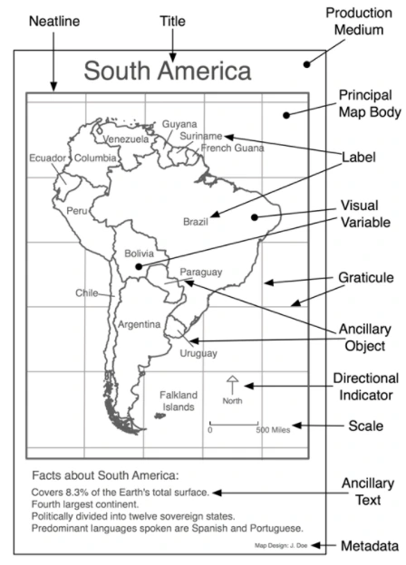
Sumber: OpenALG, Chapter 2: Map Elements and Design Principles · CC BY 3.0. Gambar dikonversi ke WebP tanpa mengubah isi.
Rujukan konsep: OpenALG. Bab tersebut menjelaskan muka peta, judul, legenda, skala, arah, inset, label, metadata, koordinat, dan bingkai.
4. Mengenal simbol dari awal
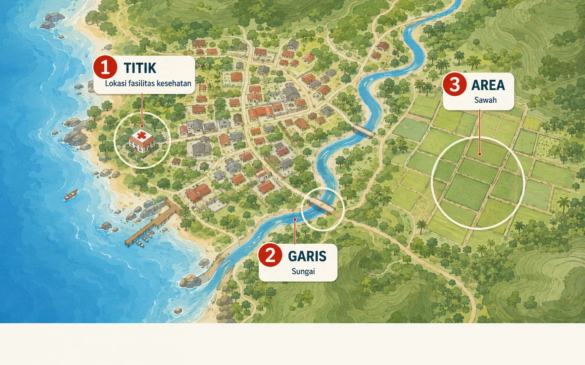
Sumber: Ilustrasi pembelajaran yang dibuat khusus untuk materi ini. Wilayah pada gambar bukan lokasi nyata dan simbolnya bukan simbol resmi RBI.
Baca gambar dari kiri ke kanan: lokasi fasilitas ditandai sebagai titik; sungai mengikuti bentuk memanjang sebagai garis; sawah memiliki cakupan sehingga ditampilkan sebagai area.
Mengapa objek diubah menjadi simbol?
- Bangunan, jalan, dan danau tidak dapat ditampilkan sebesar bentuk aslinya.
- Simbol menyederhanakan objek agar tetap dapat dikenali.
- Legenda menjelaskan arti setiap simbol.
Titik · lokasi
Garis · jalur
Area · wilayah
1) Simbol titik
- Menunjukkan lokasi suatu objek.
- Dapat berbentuk lingkaran, segitiga, tanda tambah, atau bentuk lain.
- Ukuran tandanya tidak otomatis menunjukkan luas objek di lapangan.
Titik · Sumber BIG
- Tanda tambah merah menunjukkan lokasi fasilitas kesehatan. Tanda ini bukan batas bangunannya.
2) Simbol garis
- Menunjukkan objek yang memanjang, seperti jalan dan sungai.
- Garis juga dapat menunjukkan batas wilayah atau ketinggian yang sama.
- Warna, ketebalan, dan pola garis membantu membedakan maknanya.
Garis · Sumber BIG
- Garis biru muda mengikuti jalur sungai. Bentuk memanjang membantu kita menelusuri alirannya.
3) Simbol area atau bidang
- Menunjukkan objek yang memiliki luas, seperti permukiman, sawah, atau danau.
- Warna atau pola isian membedakan jenis wilayah.
- Batas bidang membantu menunjukkan cakupan objek.
Area · Sumber BIG
Area · Sumber BIG
- Bidang cokelat muda menunjukkan wilayah permukiman. Simbol ini memiliki cakupan luas.
- Pola garis biru pada bidang menunjukkan sawah. Jangan menganggap semua warna biru berarti perairan.
Temukan ketiganya pada satu peta
Titik · Sumber BIG
Garis · Sumber BIG
Area · Sumber BIG
Area · Sumber BIG
- Titik: cari tanda fasilitas dan cocokkan dengan legenda.
- Garis: ikuti jalur jalan atau sungai.
- Area: perhatikan bidang permukiman dan penutup lahan lainnya.
Titik, garis, dan area adalah bentuk simbol, bukan tiga jenis peta. Ketiganya dapat digunakan bersama pada peta yang sama.
Cara membedakan simbol
Kategori
Bentuk atau warna berbeda membedakan jenis objek.
Jumlah
Ukuran berbeda dapat menunjukkan jumlah jika dijelaskan dalam legenda.
Titik–garis–area menjelaskan bentuk penyajian. Kategori–jumlah menjelaskan jenis informasi. Jangan menyatukan keduanya sebagai satu daftar jenis simbol.
Tanda juga dapat berbentuk geometris, seperti lingkaran, atau menyerupai objek. Arti setiap tanda tetap harus diperiksa pada legenda.
Skala memengaruhi bentuk simbol
- Pada peta satu negara, kota dapat ditampilkan sebagai titik.
- Pada peta yang lebih rinci, wilayah kota dapat ditampilkan sebagai area.
- Jadi, bentuk simbol mengikuti tujuan dan skala peta, bukan hanya jenis objek.
5. Komponen peta dan cara membacanya
Di mana wilayah dan objek yang dibahas?
Apakah peta digunakan untuk memperkirakan jarak?
Apakah informasi masih sesuai untuk digunakan?
Judul: apa, di mana, dan kapan
Wilayah dan tahun belum diketahui.
Tema, wilayah, dan waktu disebutkan.
Muka peta: dipotong atau ditampilkan terpisah
Muka peta terpotong mempertahankan sebagian wilayah di sekitarnya sebagai konteks. Muka peta terpisah hanya menampilkan wilayah utama sehingga lebih ringkas, tetapi dapat kehilangan konteks.
Sumber: OpenALG, Chapter 2: Map Elements and Design Principles · CC BY 3.0. Gambar dikonversi ke WebP tanpa mengubah isi.
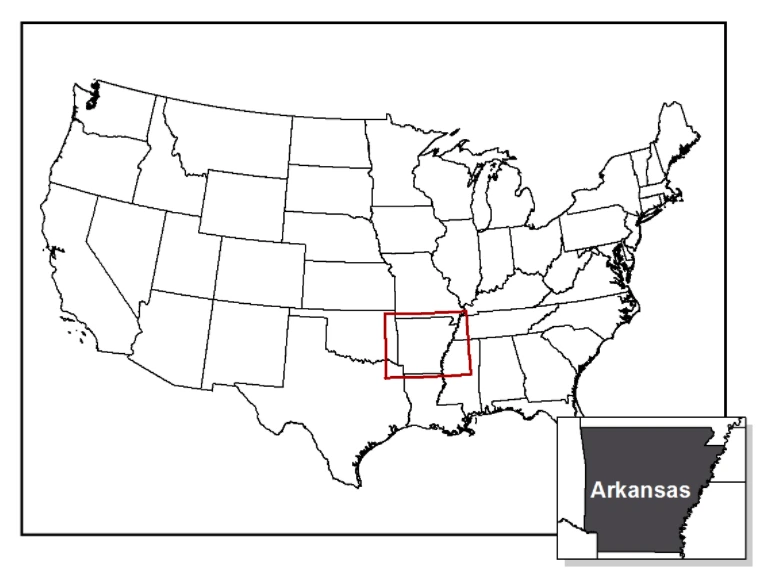
Sumber: OpenALG, Chapter 2: Map Elements and Design Principles · CC BY 3.0. Gambar dikonversi ke WebP tanpa mengubah isi.
Inset dan peta lokasi memiliki fungsi berbeda
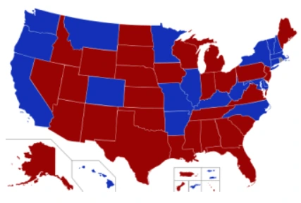
Sumber: OpenALG, Chapter 2: Map Elements and Design Principles · CC BY 3.0. Gambar dikonversi ke WebP tanpa mengubah isi.
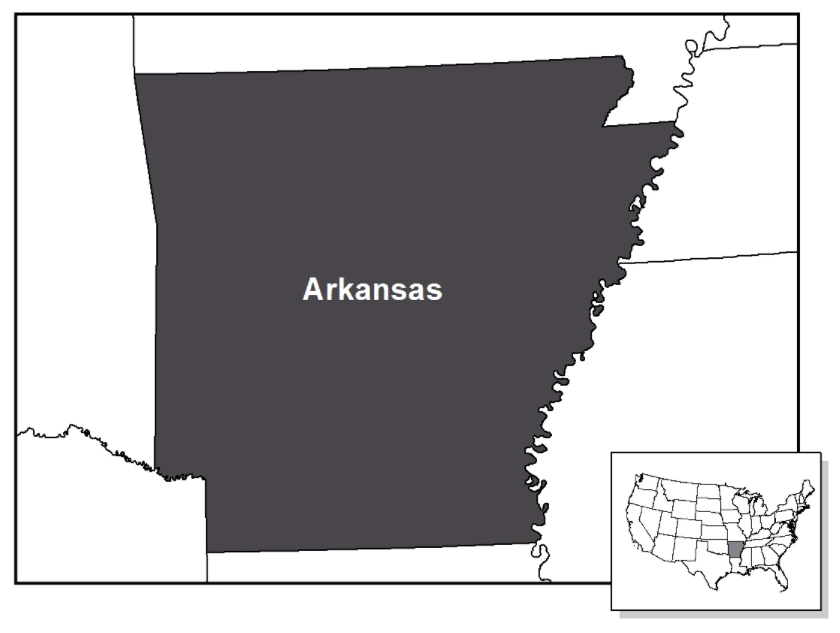
Sumber: OpenALG, Chapter 2: Map Elements and Design Principles · CC BY 3.0. Gambar dikonversi ke WebP tanpa mengubah isi.
Legenda: hanya informasi yang perlu dijelaskan
- Simbol pada legenda harus sama dengan simbol pada muka peta.
- Judul legenda sebaiknya menjelaskan variabel dan satuannya, bukan sekadar menulis “Legenda”.
- Peta umum biasanya menjelaskan lebih banyak simbol; peta tematik menonjolkan simbol tema utama.
Tiga cara menyatakan skala
1 satuan pada peta mewakili 25.000 satuan di lapangan.
Menyatakan hubungan jarak dengan kalimat.
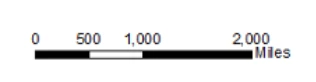
Ikut berubah secara proporsional ketika gambar diperbesar.
Contoh muka peta, inset, peta lokasi, dan skala berasal dari OpenALG · CC BY 3.0.
Arah, koordinat, label, dan sumber
- Arah: panah utara diperlukan jika orientasi tidak mudah dikenali; ukurannya tidak perlu dominan.
- Koordinat: membantu menunjukkan posisi, tetapi sistem acuannya harus jelas.
- Label: harus terbaca, tidak bertumpuk, dan mengikuti tingkat kepentingan objek.
- Sumber dan waktu data: memungkinkan pembaca menilai asal serta kesesuaian informasi. Tahun data tidak selalu sama dengan tahun penerbitan.
- Bingkai: merapikan susunan; bukan batas administrasi.
6. Membandingkan contoh peta
A. Peta yang sulit dibaca dan peta yang diperbaiki
Kedua peta berikut memakai tema yang sama. Perbedaannya terletak pada pilihan komponen, ukuran, penempatan, dan hierarki visual.
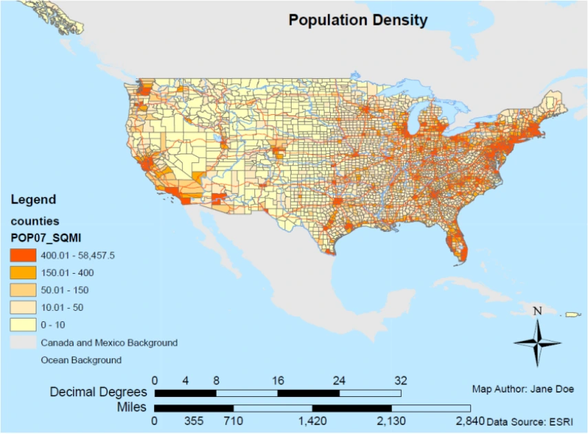
Sumber: OpenALG, Chapter 2: Map Elements and Design Principles · CC BY 3.0. Gambar dikonversi ke WebP tanpa mengubah isi.
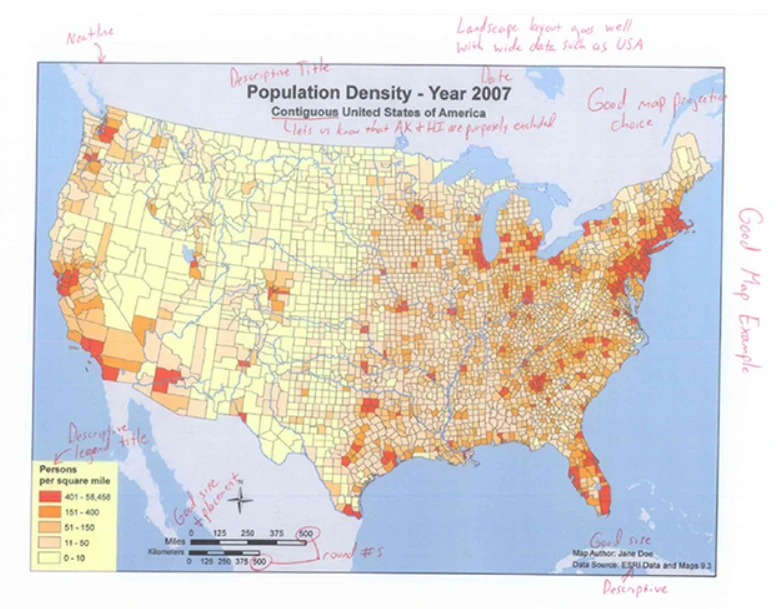
Sumber: OpenALG, Chapter 2: Map Elements and Design Principles · CC BY 3.0. Gambar dikonversi ke WebP tanpa mengubah isi.
Lihat peta dengan bagian yang perlu diperbaiki
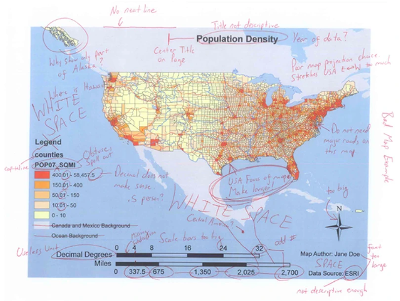
Sumber: OpenALG, Chapter 2: Map Elements and Design Principles · CC BY 3.0. Gambar dikonversi ke WebP tanpa mengubah isi.
Dari umum menjadi tema + wilayah + tahun.
Jalan yang menutupi pola kepadatan dihilangkan.
Nama variabel dan satuan dibuat mudah dipahami.
Dikecilkan agar tidak mengalahkan tema utama.
Dibuat lebih spesifik dan ditempatkan sebagai informasi pendukung.
Ruang digunakan lebih seimbang dan muka peta diperbesar.
B. Lima prinsip untuk menilai kejelasan
Tulisan dan simbol terlihat serta dapat dipahami.
Objek penting dapat dibedakan dari latarnya.
Wilayah atau tema utama segera dikenali.
Mata diarahkan dari informasi utama ke pendukung.
Ukuran dan posisi elemen terasa seimbang.
Lima prinsip diringkas dari Esri — Primary Design Principles for Cartography: legibility, visual contrast, figure-ground, visual hierarchy, dan proportion.
C. Galeri contoh: tujuan berbeda, kebutuhan berbeda
Peta umum dunia
Sumber: Physical World Map, CIA World Factbook, via Wikimedia Commons.
Amati: pilihan unsur dan tingkat rincian pada cakupan dunia.
Peta kepadatan penduduk
Sumber: U.S. Census Bureau, Population Size and Density, 1 Juli 2006.
Amati: legenda, satuan, dan perbedaan jumlah dengan kepadatan.
Peta anomali suhu

Sumber: NASA Earth Observatory — World of Change: Global Temperatures.
Amati: warna menunjukkan perbedaan terhadap periode acuan, bukan suhu sebenarnya.
Peta tekanan panas karang

Sumber: NOAA Coral Reef Watch, Pacific Climate Update, 7 Maret 2024, Gambar 3.
Amati: kategori peringatan, tanggal, serta batas kesimpulan.
Peta aliran Minard

Sumber: Martin Grandjean, vektorisasi peta Charles Joseph Minard.
Amati: posisi, arah, lebar garis, warna, dan grafik suhu.
Peta penelitian beberapa panel

Sumber: Chintya, N. P. P., Baek, S., & Kim, W. (2026). Assessing Coral Reef Stress in Indonesia by Combining SST and Ocean Color Data. Remote Sensing, 18(12), 2019..
Amati: perbedaan legenda dan satuan di setiap panel.
Gunakan urutan yang sama: tujuan → muka peta → simbol dan legenda → komponen pendukung → informasi yang dapat dan tidak dapat disimpulkan.
7. Contoh diskusi jika waktu tersedia
Bagian ini tidak harus dibahas seluruhnya. Pilih satu peta dan ajukan satu atau dua pertanyaan secara langsung kepada mahasiswa.
Lokasi pengamatan di Indonesia

Sumber: Chintya, Baek, dan Kim (2026) · CC BY 4.0.
Pertanyaan: apakah banyaknya titik menunjukkan luas terumbu karang atau lokasi pengamatan?
Sulawesi

Sumber: Chintya, Baek, dan Kim (2026) · CC BY 4.0.
Pertanyaan: komponen mana yang harus dibaca sebelum membandingkan warna pada setiap panel?
Nusa Tenggara

Sumber: Chintya, Baek, dan Kim (2026) · CC BY 4.0.
Pertanyaan: informasi apa yang perlu diperiksa sebelum membandingkan peta ini dengan wilayah lain?
Pilihan pertanyaan umum: Apa tujuan petanya? Simbol mana yang menjadi informasi utama? Komponen apa yang paling membantu pembaca? Apa yang belum dapat disimpulkan dari peta tersebut?
8. Ringkasan dan pertemuan berikutnya
- Jenis peta ditentukan oleh dasar pengelompokannya, misalnya isi, skala, atau penyajian.
- Simbol titik menunjukkan lokasi; garis menunjukkan jalur atau batas; area menunjukkan wilayah.
- Legenda dan komponen lain membantu pembaca memahami peta dengan benar.
Minggu 5 · Proyeksi peta
Bagaimana permukaan bumi yang melengkung digambarkan pada bidang datar? Kita akan membahas perubahan bentuk, luas, jarak, dan arah pada peta.
9. Referensi dan sumber gambar
Daftar bacaan dan sumber
- Badan Informasi Geospasial — Basemap Rupabumi Indonesia. Cuplikan wilayah Yogyakarta; diakses 6 September 2026. Nama layanan menyebut RBI 2019; tanggal akses bukan tahun pengamatan data.
- Chintya, N. P. P., Baek, S., & Kim, W. (2026). Assessing Coral Reef Stress in Indonesia by Combining SST and Ocean Color Data. Remote Sensing, 18(12), 2019.
- NASA Earth Observatory — World of Change: Global Temperatures
- USGS — Seismicity of the Earth 1900–2018
- Uli Ingram, OpenALG, Bab 2: Map Elements and Design Principles
- Kamyar Hasanzadeh, Lesson 1: Introduction to Cartography
- Eric Deluca dan Dudley Bonsal, Design and Symbolization
- U.S. Census Bureau, Population Size and Density, 1 Juli 2006
- USGS, Topographic Map Symbols
- Physical World Map, CIA World Factbook, via Wikimedia Commons
- Varian peta John Snow, wabah kolera London 1854
- Martin Grandjean, vektorisasi peta Charles Joseph Minard
- NASA SVS, Earth at Night 2012
- NOAA Coral Reef Watch, Pacific Climate Update, 7 Maret 2024, Gambar 3
- Manuel Gimond — Good Map Making Tips